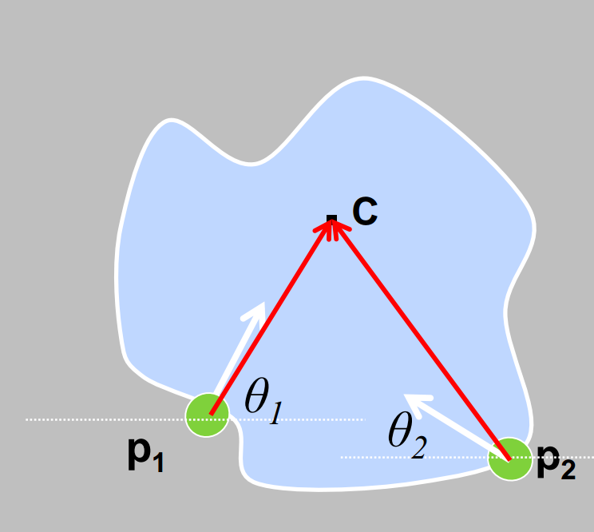
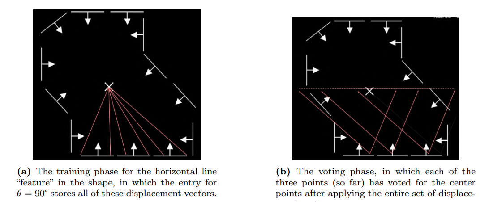
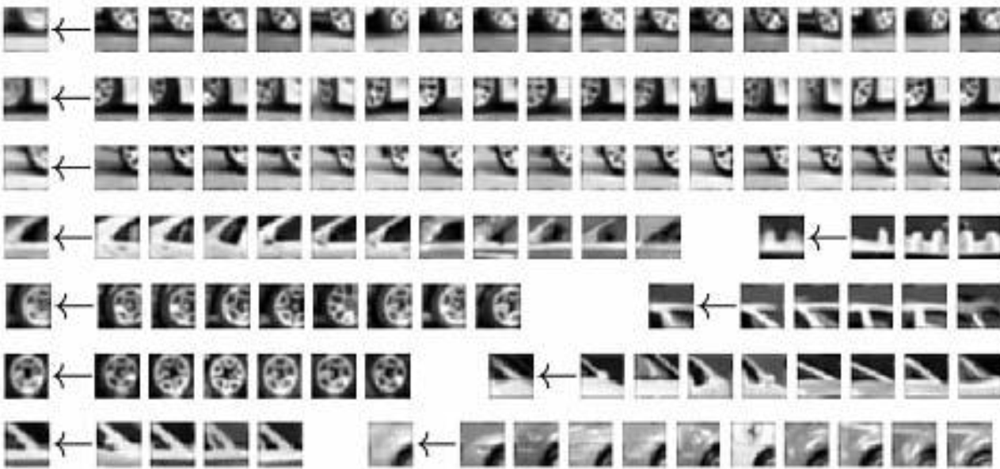
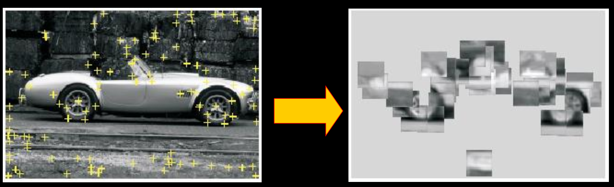
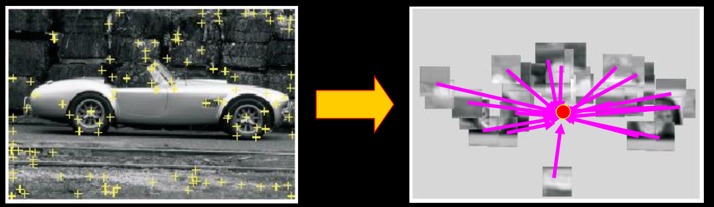

Generalization - Hough Table
Non-analytic model
Parameters express variation in pose or scale fixed but arbitrary shape (fixed parameters like circles with radius r). (out-dated)
Visual code-words based features
Not edges but detected templates learned from models (this is “now”)
Previously, we know how to vote given a particular pixel because we had solve the equation for the shape. For an arbitrary shape, we instead determine how to vote by building a Hough Table
Hough Table
A Hough Table stores displacement vectors for a particular gradient angle .

Training: build a Hough Table
- At each boundary point, compute displacement vector:
- Measure the gradient angle at the boundary point.
- Store that displacement in a table indexed by
Recognition
- At each boundary point, measure the gradient angle
- Look up all displacements in displacement table.
- Vote for a center at each displacement.

Algorithm
Orientation is known
For each edge point
Compute gradient direction θ
Retrieve displacement vectors r to vote for reference point.
Peak in this Hough space (X,Y) is reference point with most supporting edges
Orientation is unknown
For each edge point
For each possible master θ*
Compute gradient direction θ
New θ’ = θ - θ*
For θ’ retrieve displacement vectors r to vote for reference point.
Peak in this Hough space (now X,Y, θ*) is reference point with most supporting edges
Scale S is unknown
For each edge point
For each possible master scale S:
Compute gradient direction θ
For θ’ retrieve displacement vectors r
Vote r scaled by S for reference point.
Peak in this Hough space (now X,Y, S) is reference point with most supporting edges
Training: Visual code-words
- Build codebook of patches around extracted interest points using clustering

- Map the patch around each interest point to closest codebook entry

- For each codebook entry, store all displacements relative to object center
